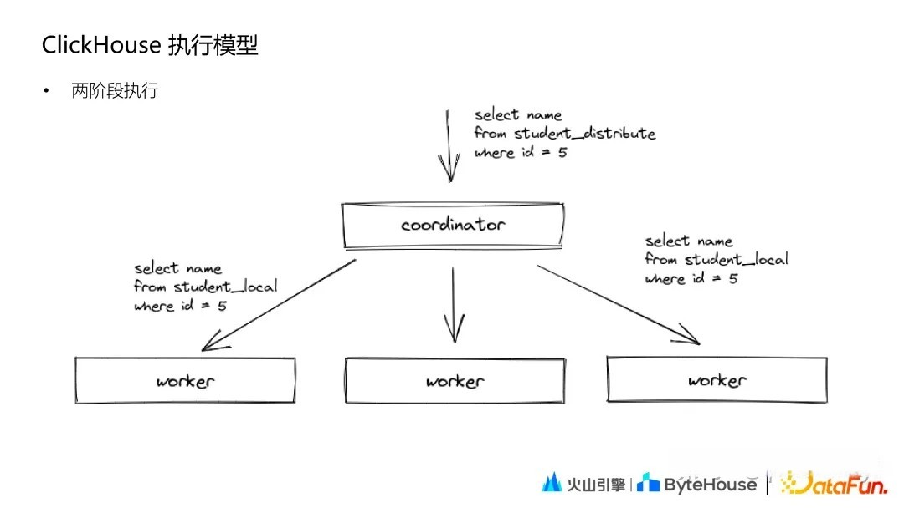

ClickHouse Join
clickhouse的join 分为单机join和分布式join
单机join
SQL 里面只有本地表的 JOIN，只会在当前节点执行。本地JOIN方式分为Hash JOIN和Merge Join。优先使用 hash join 当内存达到一定阈值后再使用 merge join，优先满足性能要求。
Hash Join
- 右表全部数据加载到内存，再在内存构建 hash table。key 为 joinkey。
- 从左表分批读取数据，从右表 hash table匹配数据。
Merge join
- 对右表排序，内部 block 切分，超出内存部分 flush 到磁盘上，内存大小通过参数设定。
- 左表基于 block 排序，按照每个 block 依次与右表 merge
分布式join
分布式Join分为普通分布式Join以及Global Join。在分析两种Join的执行流程下，我们先看看CK的执行模式。
执行模式
和SR很像，查询也是两个阶段

第一阶段，Coordinator 收到查询后将请求发送给对应的 worker 节点；第二阶段，Coordinator 收到各个 worker 节点的结果后汇聚起来处理后返回。
普通分布式Join
1 | SELECT |
对于上面的SQL，其执行过程如下：
Coordinator 节点，给每个节点分发子查询，子查询 sql（tob_apps_all 替换成本地表，users_unique_all 保持不变依然是分布式表）。
每个节点执行 Coordinator 分发的 sql 时，发现 users_unique_all 是分布式表，就会去所有节点上去查询以下 SQL(一共有 N*N。N 为 shard 数量)。
1
SELECT device_id, hash_uid FROM users_unique WHERE (tea_app_id = 268411) AND (last_active_date >= '2022-08-06')
每个节点从其他 N-1个节点拉取2中子查询的全部数据，全量存储(内存 or 文件) ，进行本地 JOIN
- Coordinator 节点从每个节点拉取3中的结果集，然后做处理返回给 client。
可以看出，ClickHouse 普通分布式JOIN查询是一个简单版的Shuffle JOIN的实现，或者说是一个不完整的实现。不完整的地方在于，并未按JOIN KEY去Shuffle数据，而是每个节点全量拉去右表数据。存在的问题：
- 子查询数量放大。
- 每个节点都全量存储全量的数据。
分布式Global Join
1 | SELECT |
对于上面SQL，其基本执行过程：
- 一个 Clickhouse 节点作为 Coordinator 节点，分发查询。在每个节点上执行sql（tob_apps_all 替换成本地表，右表子查询替换成别名 ut）。
- Coordinator 节点去其他节点拉取 users_unique_all 的全部数据，然后分发到全部节点（作为1中别名表 ut 的数据）。
- 每个节点都会存储全量的2中分发的数据(内存or文件)，进行本地 local join。
- Coordinator 节点从每个节点拉取3中的结果集，然后做处理返回给 client。
GLOBAL JOIN 可以看做一个不完整的Broadcast JOIN实现,将右表的查询在initiator节点上完成后，通过网络发送到其他节点，避免其他节点重复计算，从而避免查询放大。然而同样可能存在问题：
每个节点都全量存储数据。
如果右表较大，分发的数据较大，会占用网络带宽资源。
ClickHouse Join 优化
避免Join
生成大宽表
数据预生成(由 Spark/Flink 或者 Clickhouse 物化视图产出数据)，形成大宽表，基于单表的查询是 ClickHouse 最为擅长的场景。
我们有个指标，实现的 SQL 比较复杂（如下），每次实时查询很耗时，我们单独建了一个表 table，由 Spark 每日构建出这个指标，查询时直接基于 table 查询。
使用IN代替JOIN
JOIN 需要基于内存构建 hash table 且需要存储右表全部的数据，然后再去匹配左表的数据。而 IN 查询会对右表的全部数据构建 hash set，但是不需要匹配左表的数据，且不需要回写数据到 block。
更快的Join
数据预先相同规则分区，也就是 Colocate JOIN。优先将需要关联的表按照相同的规则进行分布，查询时就不需要分布式的 JOIN；数据冗余存储，如果一个表的数据量比较小，可以不分 Shard 存储，每个 shard 都存储全量的数据。查询时，不需要分布式 JOIN，直接在本地进行 JOIN 即可。
更少的数据
不论是分布式 JOIN 还是本地 JOIN，都需要尽量让少的数据参与 JOIN，既能提升查询速度也能减少资源消耗。比如优化SQL下推。
实现优化
CK并未实现标准的Shuffle JOIN，可以想办法优化JOIN执行方式。像字节跳动对ClickHouse的Join实现模式进行了优化，支持了完整的Shuffle join和Broadcast Join，详细内容，请看：揭秘字节跳动解决ClickHouse复杂查询问题的技术实践
参考：https://blog.csdn.net/ByteDanceTech/article/details/126716600

...
...
This is copyright.